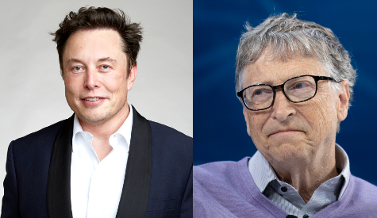

TRENDING NOW
BREAKING NEWS
Elon Musk and Bill Gates fight continues, leaving many confused.

After Elon Musk cut Bill Gates in the McDonalds line, Bill Gates has
been attacking Elon Musk. He has almost been banned from Twitter for
bullying Elon Musk. On February 16 Elon Musk tweeted: "I have really
underestimated the power of Bill Gates and how much he can bully me."
Some controversy regarding whether McDonalds should be banned is also
going around. Thousands of protestors are dealing with this and trying to
close down McDonalds stores in Texas. 81 restaurants have already been
closed down. The Rock has also been included in this ordeal. He teased
Bill Gates after hearing Microsoft might close down. Bill Gates was so angry
that he bought a whole poster to stick onto the Microsoft office saying that
“the rock is bad”. Elon Musk even had to cancel his SpaceX rocket because
Tiktokers, who were Bill Gates fans, broke his rocket by throwing Microsoft
logos made of metal.
Did the Rams Actually Win Super Bowl 56?
Evidence Shows That The Rams Touchdown Was a False Start.
According to an investigation at NYC police, the Rams were found guilty
for a false start on their touchdown. The score before the
touchdown
was 16-20 Bengals ahead. The false start was not regarded when the
Rams scored the touchdown and is still being determined whether they
should have won.
Read More
Microsoft expected to shut down after stock market crash on
February 15, 2022.

Microsoft announced that they might have to shut down there company
after a huge stock market crash in Dow Jones. Microsoft stocks fell
by
456.31% and are currently at $0.34 per share.
Read More
Pizza being banned in China and Japan. Why?

Authorities announced that the pizza ban in China and Japan was getting
worse.
"Ever since a gang of teenagers were making a mess because they threw
pizzas,
China and Japan goverment officals have banned all pizza. Anyone caught
eating pizza could be sent to a bootcamp or to jail." says investigator.
Read More
/cdn.vox-cdn.com/uploads/chorus_image/image/70506182/ap22045020283044.0.jpeg)